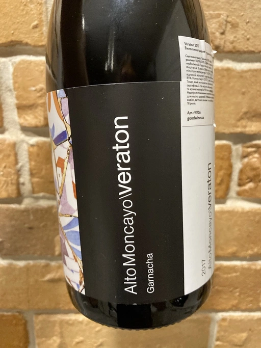

- Type
- Red Still, Dry
- Producer
- Bodegas Alto Moncayo
- Vintage
- 2017
- Location
- Spain, Campo de Borja DO
- Grapes
- Grenache
- Alcohol
- 15.5
- Sugar
- 2.4
- Price
- 825 UAH
- Cellar
- N/A
Producer
Wine producer from Spain.
Ratings
2020-12-18 - 8.25
Powerful Campo de Borja from low yielding 45-65 years old Garnacha vines. Black currant, medicinal herbs and salty rocks, raw meat, earth and smoke hints. Very pleasant nose! I didn’t really feel those 15.5 abv, maybe thanks to freshness and well integrated tannins. Round, powerful, balanced with long aftertaste.